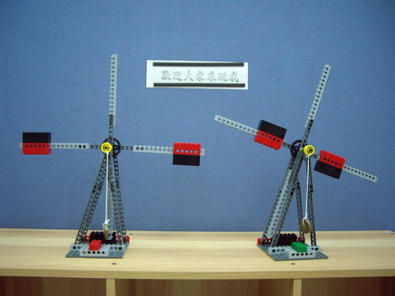
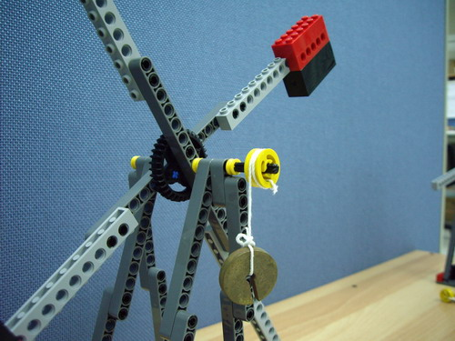
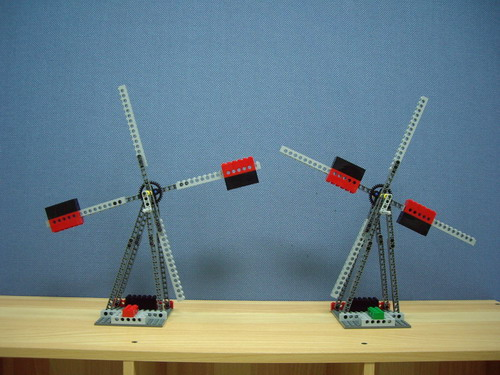
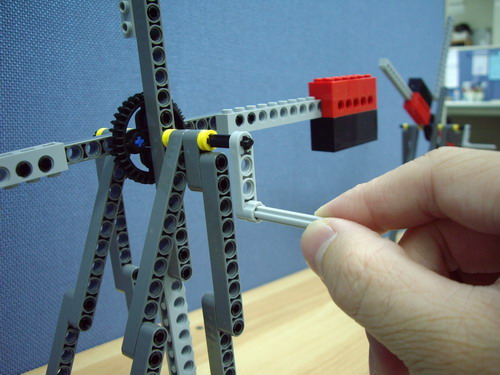

今年(2007)本校因為參加WRO機器人大賽，買了不少樂高積木，陪學生做機器人的同時，
一時手癢，就做了兩台樂高峰車。

↑做好的兩台風車，結構玩全一模一樣。除了左邊的那台重錘在外邊，
右邊這台重錘在內邊。

↑風車軸心加了連結到砝碼的繩子，可用砝碼的重量帶動風車轉動。
↑看看砝碼重量帶動風車轉動的影片吧！

↑把風車改裝一下，變成手搖式風車。

↑原本用砝碼帶動的風車，改成用手搖來轉動。
↑看看手搖式風車轉動的影片吧！
想一想，哪種風車容易轉起來也容易停下來？是重錘在內還是重錘在外？為什麼呢？